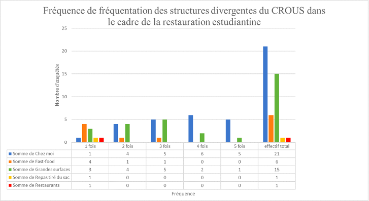

Puis, nous avons tenté de savoir si les étudiants utilisaient d'autres structures que celles proposées par le CROUS pour se restaurer le midi
80 % des étudiants intérrogés se restaurent dans d'autres lieux que ceux proposés par le CROUS.
Quels sont ces autres lieux de restauration ? Et à quelle fréquence les étudiants y mangent-t-ils ?
・Ce sont 48% des étudiants qui se restaurent chez eux, en mojarité 4 fois/semaine.
・Ce sont 34% des étudiants qui se restaurent en grandes surfaces, en mojorité 3 fois/semaine.
Pourquoi les services de restauration du CROUS ne sont-ils pas pleinement attractifs ?
Ils semblent aussi se soucier davantage de leur confort, en s'octroyant une vraie pause déjeunée chez soi ou ailleurs, à l’écart du bruit de la Cafétéria ou du RU :
・ la qualité des services techniques est un reproche émis par 15 étudiants.
La minorité d'étudiants ne mangeant pas dans les structures du CROUS semble se soucier davantage de leur alimentation :
・ 17 personnes veulent diversifier son alimentation
Toutefois ce point ne semble pas coïncider avec le fait que les prix soient plus attractifs ailleurs : une alimentation moins chère n’est généralement pas synonyme de meilleure qualité.
Ainsi, comment rendre les services du CROUS plus attractif ?
Dans la catéorie rapport qualité / quantité / prix :
・13 étudiants pensent que la qualité des services est à revoir.
・10 étudiants pensent que la quantité des services est à revoir.
Dans la catégorie organisation et fonctionnement du lieu :
・le système de point demande à être révisé.
・les horaires d'ouverture également.
created with
HTML Website Builder .